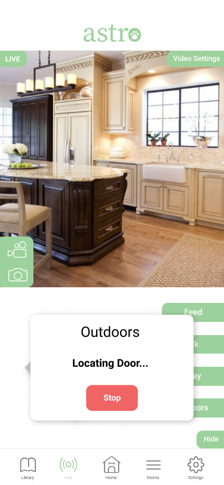

Our team designed this product for dog owners who can be away from home for long periods of time like a full work day or vacations. Dog owners who work or travel often are concerned about the daily interactions that dogs need to be healthy such as feeding, going outside, and exercising. Astro is an innovative product that tackles this problem space and provides a one-in-all solution for dog owners.
Our design process took 3 months of user research, ideation, testing, and iteration. Our team consisted of four members.
When dog owners are away, their dogs often need to be left at home. On long work days and business trips, dogs are left at home, unmonitored. Relatives or dog walkers may stop by, but no one will be keeping the dog safe 100% of the time. We want to create a product that helps these dog owners in providing the right care for their dogs.
The primary target users of our product are hard-working industry professionals who are away from home for long periods of time and own pets. These users are either often working late or work in an industry that travels frequently. Secondary users include people/families who travel a lot and own pets and would rather leave their pet at home than leaving them in the care of another person.
To begin our project, we conducted user research to discover what problems and pain points dog owners have with their daily lives of taking care of their dogs.
We conducted semi-structured interviews spanning about two weeks with four dog owners. We learned about their different concerns and found the main concerns dog owners had was worrying about their dogs eating or being let out when the owners were away.
Dog owners worry about their dogs when away even with care taking systems
We found that our participants had many positive elements with taking care of their dogs.
However, we also discovered several pain points for these dog owners
Our team’s goal was to alleviate these pain points for dog owners
Moving forward with our research, we conducted a thematic analysis of our interview transcripts. From our thematic analysis, we identified 6 salient tasks that dog owners engaged in.
For this project, our team decided to address the first four tasks because they were considered more important from our participants. In addition, traveling was not common among our participants so our team moved forward with a product meant for the home, to be able to impact a larger population of dog owners. With the four tasks of feeding, letting dogs in or out, monitoring dogs, and maintaining the health of dogs in mind. We brainstormed different products to address these tasks. Our three main ideas were a robot, smart collar, and smart crate.
Our concept is a robot that is able to accomplish the sorts of tasks necessary to properly care for a dog left at home by itself. This means being generally autonomous, and capable of navigating the terrain of a home. Being able to recognize what the various objects that occupy a home, and to interact with them in meaningful ways. The robot has to be able to locate and open doors, recognize and monitor the dog, locate toys and use them to play with the dog, locate food dishes and dispense food into them. Furthermore, it must have a system or programming and control that is intuitive and easy to operate for all users. Toward that end, we elected to have an app that can be run on computers or mobile devices that is the primary means of interacting with the robot. This application allows the user to initially program the robot so that it is familiar with the home in which it will be operating, and then to schedule the events that will accomplish those tasks which the user needs to be done while they are away from home. These tasks can be done autonomously by the robot, or if the user desires, activated and controlled manually by the user through specific controls.
With our design concept in mind, we set out to create low-fidelity prototypes to test and flesh out our concept. Because of the time constraints of this project, our team mainly focused on creating the mobile app companion for the robot.
Our team did not prioritize prototyping the robot, because we already “have” an existing prototype and model existing with Boston Dynamic’s SpotMini.
For our paper prototypes, creating our interface on paper allowed us to refine and formulate the design without too much investment. This allowed us to revise the app design several times. Testing with our potential users helped refine it further. To show the full process, we’ll go over our tasks in our initial prototype, what we changed, and finally the same task views in our final paper and digital prototypes.
Our app is based on a design of five screens: a home page, a live page, a schedule page, a settings page, and a media library page. The user starts out on the home screen and proceeds to tap on one of the buttons on the bottom to continue.
When we performed user testing, we focused in on two tasks in particular: monitoring the dog, and letting the dog in/out.
Monitoring the dog is fairly simple — the user starts on the home screen, taps the “Live” icon, and ends on the live/camera page.
The home screen (left) and the live screen (right) To let the dog in and out, the user would have two options. First, they could do so manually from the camera page, clicking “Manual controls” and then “Door”.
The live screen (left) and the live screen with manual controls (right) Second, they could tap the “Schedule” icon on the main page, and add a new event to let the dog out with the + icon.
From left to right: The home screen, the schedule screen, and the new event screen This is from our initial version of the prototype. However, we went through two different phases of testing. Our team first conducted heuristic evaluations with our classmates then usability testing with our target users.
Our feedback from the evaluations showed many improvements to be made. We had several issues needed to fix such as adding in a navigation icon for the home page, making the language and design more consistent between screens, and making it clear what to do in the case of errors when conducting a task or deleting an event.
Improved screens from our heuristics evaluation. From left to right: the home screen, the live screen with controls, and the new event screen
With user testing, we were able to improve our interface usability greatly. We conducted three usability tests with dog owners, asking them to do a series of tasks. Our participants were chosen purposefully. We utilized our TA for expert-based testing and we used two other dog owners for our user-based testing. As for the methods used, we had a task list that we wanted our users to walk us through doing, using our paper prototype application. The tasks for our users included opening and closing the doors to let their dog out, feeding their dogs, playing with their dogs, seeing a live feed of their dogs and manually controlling that feed, creating an event, and taking a picture and a clip of their dog.
The revisions we made after user testing reflected the feedback we received. We made each screen match each other by making a consistent home bar at the bottom. We cleared up some of the terms we used that confused our users, such as continue when we wanted to inform our users to confirm the action they’ve selected. We also made the task of creating and deleting an event much smoother and we made it easier to take a picture or a video of your dog using our product.
Our final design shows the much improved consistency and revisions from our testing. Our team felt that many of the concerns and feedback we received were well implemented with our final design. Here are some of the same tasks, shown in full digital glory.
The letting in/out process has the same two flows, but with revised wording. First, the manual letting dog in/out process.
Scheduling an event is mainly the same “flow” as well. The user starts on any screen, taps on “Events”, then taps on “Add Event” to add an event.
During our research, we found that our typical users wanted a hands-off approach taking care of their dogs while they were away yet still being able to interact with their dogs. Automation was therefore key, while at the same time providing the high level of functionality that the sorts of tasks revolving around pet care required. We found our potential users would often be paying someone to come to their house while the user was away, and do the sorts of the things and solve the sorts of problems that our product aims to do.
In order to offer the same ease of use, while still being capable of accomplishing these same tasks, we recognized we would need a product that was robust and capable of performing tasks such as; navigating the space of a typical home, recognizing various objects within a home, opening doors, closing doors, recognizing when doors are open or closed, finding a dog dish inside of a home, finding dog toys inside of a home, using a dog toy to play with a dog, filling a dog dish with food, finding and having the capacity to broadcast video of a dog. We also needed a way for a user to automate as many of these processes as they desired, while still maintaining the ability to take over with a sort of manual control for personal interaction.
The biggest limitation of our project is the cost overhead of developing this technology. This isn’t something we’re approaching in designing it, but the closest product in the real world, Boston Dynamic’s Robot MiniSpot, costs ~$22k. This is not very affordable in terms of what our goals are. The technology in creating one of these robots is still in development and is highly dependent on things like machine learning and computer vision. In future projects, we believe that one thing we will work on minimizing is the cost of creating this robot without trading too much functionality. Making it more realistic and affordable would be a big focus.
One of the main ways that our project can evolve in the future is taking advantage of the constantly evolving technology that is developed for automated robots. This technology is undergoing large amounts of investment and has a large community dedicated to bringing technology to consumers at affordable prices. We expect to see the cost to produce, and therefore the cost of sale consistently decrease in the coming years. Likewise, battery technology is ever improving, providing for longer times without needed to recharge. This should allow us to increase our potential user base as the product becomes more and more affordable. We will add more functionality to our application in the future, but it’s core is built, and will be adaptable to future hardware designs. However fancy someone’s robot is, they’ll still want to schedule events, and look at a live feed of their dog.
Letting dog owners easily communicate, take care of, and enhance their dog's lives when they are away.
University of Washington
Seattle, WA 98195
UWNetID@uw.edu
(206) 543-2100